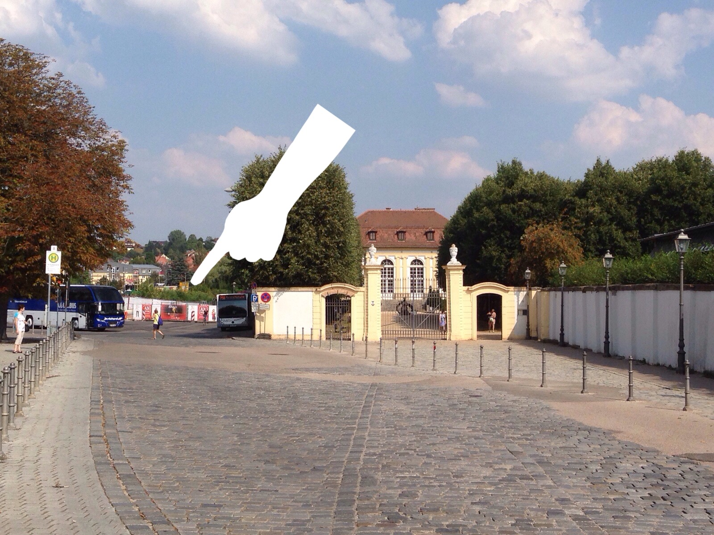
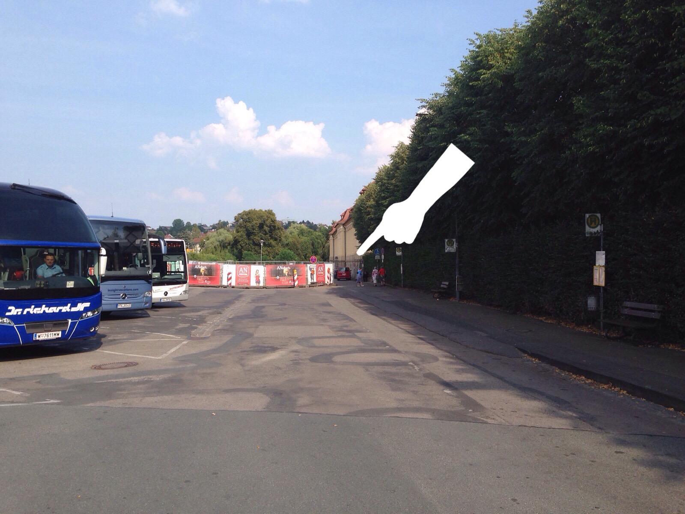
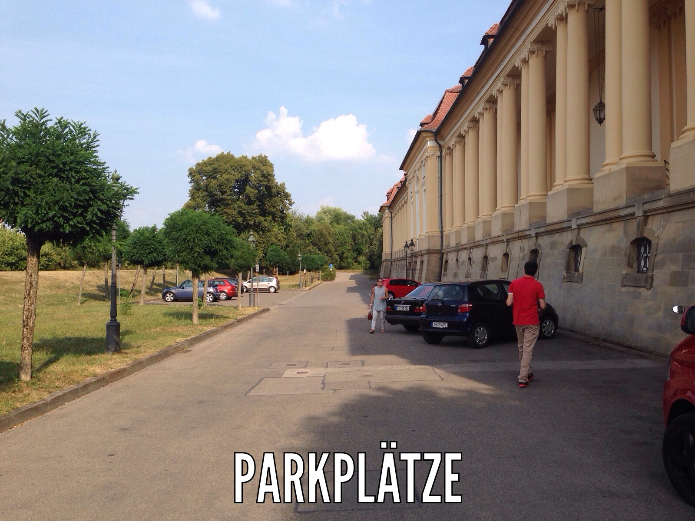

Start (Deutsch)
Start (English)
Heiraten mit xkcd
Adresse Orangerie: Promenade 33, 91522 Ansbach
Bei Fragen am Samstag: +4917641080103 (Can Demirdag) und +4917683054734 (Hanna Kolb)
(Page in English / Seite auf Englisch)
Wir, Sonja Demirdag und Benedikt Kolb, werden am 5. September 2015 in der Sankt-Gumbertus-Kirche in Ansbach heiraten. Anschließend wollen wir mit Euch in der Orangerie Ansbach feiern!
+++ Endlich: Die Bilder von der Hochzeit sind da! +++
Zuerst noch eine Bitte von uns: Falls ihr selbst noch Bilder oder vor allem Videos von der Hochzeit habt, würden wir uns sehr freuen, wenn ihr sie uns zukommen lassen könntet. Schreibt uns einfach an bs15@bkolb.eu, ihr macht uns damit eine große Freude!
Ihr könnt sie in hoher Qualität runterladen, oder in niedrigerer Qualität (lädt schneller, sind die gleichen Motive). Es sind über 600 Bilder, also macht euch einen Kaffee und nehmt euch etwas Zeit zum Durchschauen :) Hier findet ihr auch noch eine Auswahl der Bilder von der standesamtlichen Hochzeit am 11. Juli. Falls ihr das Passwort noch nicht / nicht mehr habt, schreibt mir einfach kurz unter an die Email-Adresse oben.
Ihr Lieben, es war ein wunderbares Fest mit euch, wir hätten es uns nicht besser ausmalen können! Tausend Dank, dass ihr uns diesen einzigartigen Tag bereitet habt!

Anfahrt und Parkplätze
Wir werden 40 Parkplätze direkt vor der Orangerie Ansbach mieten, ansonsten kann man am Samstag Nachmittag auch auf dem Busparkplatz vor der Einfahrt der Orangerie parken. Wir empfehlen, dort zu parken und die ca. 500 Meter bis zur Kirche zu laufen, siehe Karte.
Um zu parken, fahrt links um den Busbahnhof Ansbach herum und dann geradeaus. Rechts wird die Orangerie sichtbar, links geht es zu den Parkplätzen.
Dort einfach weiterfahren, auch wenn es etwas nach Sackgasse aussieht. Leider können wir aus technischen Gründen nicht garantieren, dass der hilfreiche weiße Finger am 5. wieder über der Szenerie schwebt.
Ihr könnt direkt vor der Fassade der Orangerie parken. Technischer Hinweis: Die Personen und schwarzen Karossen auf dem Bild werden mit einiger Sicherheit am 5. wieder vor Ort sein.

Tagesprogramm
Was euch am 5. September in Ansbach erwartet:
... um 14 Uhr die kirchliche Trauung in der St.-Gumbertus-Kirche
... um ca. 16 Uhr gibt es als Belohnung fürs Durchhalten Sekt und Brezeln in der Orangerie
... ein Kuchenbüffet mit Kaffee gibt es direkt im Anschluss, um die gute Laune der Braut zu erhalten
... eine Kaffestation findet ihr danach durchgehend im Kuppelsaal, damit es keine Ausrede zum Schwächeln gibt
... um 18.30 Uhr wird das Abendessen serviert
... ab 22 Uhr gibt es ein fränkisches Büfett im Kuppelsaal
... um 23.30 Uhr fährt die Hochzeitstorte ein, damit die Braut nochmal was Süßes bekommt
... um 0.30 Uhr fährt der erste Bus Richtung Fürth
... um 2.30 Uhr fährt ein weiterer Bus Richtung Fürth
*********
Beim Ertönen von Musik besteht Tanzpflicht - für alle - durchgehend - auch für Anfänger!
Geschenke
Huhu ihr Lieben, der eine oder andere von euch macht sich sicherlich Gedanken, was für ein phänomenal einzigartiges Geschenk man uns machen könnte... um ehrlich zu sein, wenn ihr uns eine Freude machen wollt, dann lasst eure Kreativität an einer schönen Karte für uns aus und wer möchte, der legt uns dann noch etwas Flaches mit rein. Das wäre das schönste und nützlichste Geschenk für uns, neben eurer Anwesenheit natürlich ;)
Sonstiges
Nach der Hochzeit werden wir hier die Links zu Bildern des rauschenden Fests hochladen :)